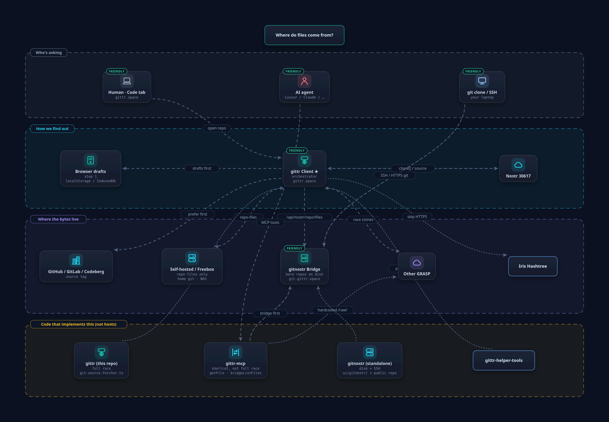

gittr ≠ ngit
- gittr ships and runs gitnostr.
- Day-to-day push/pull on gittr.space is SSH/HTTPS to the bridge, not the ngit binary.
- They interoperate on the same kinds (30617, 30618, issues, PRs).
Nostr Page · underdog git
We write code
gittr is a forge: issues, pull requests, static Pages, apps, and Lightning. The conversation is signed Nostr events — any Nostr git client can see the same issues and PRs. The files live on the git servers and GRASP hosts you pushed to. This page is the public map of that platform — each box below is a door. How gittr fits. Jobs match the Help center. Client recipes live on gittr-snips.

Same jobs as Help → What you can do on gittr. Start here if you want the product, not the wiring diagram.
Getting started: log in → create or import a repo → payments are optional (NWC / LNURL).
Protocol is shared. Codebases are not. Think events on relays → git bytes on a server → a website or a CLI, not one app per bullet on awesome-nostr.
git.gittr.space.pages.gittr.space. Blobs: blossom.gittr.space.nostr:// is interop (install ngit’s helper). Agents: gittr-mcp over HTTPS + nsec, not SSH.Issues and PRs are shared (same signed events). The extras — import, Pages, /apps, Lightning bounties, a git server you can SSH to — live on gittr.
Only gittr among these three
git push.git.gittr.space.Full tables (nak, gitstr, access methods): README · how gittr fits.
Teal outline = this Page. Sibling Pages stay in this tab so the map feels like one site. gittr.space, GitHub, Blossom, and Help open in a new tab.
People / agents
gittr platform · hostnames
Nostr + remotes
Same NIP-34 · other stacks (not gittr)
The tiles above are the clickable map. These stills are the same neighborhoods as in the gittr README — useful when you want the whole picture at once.

No compile step. Just the website.
Next.js UI. Production notes for operators.
The bridge. Where git clone actually talks.
git-adapted fork. Open kinds + GRASP. wss only.
Serves this HTML from Blossom + kind 35128.
Cookbook Page plus every snippet folder in gittr-helper-tools.
Install in Cursor / Claude. HTTPS + nsec. Not SSH.
Signing is not paying. Two protocols.